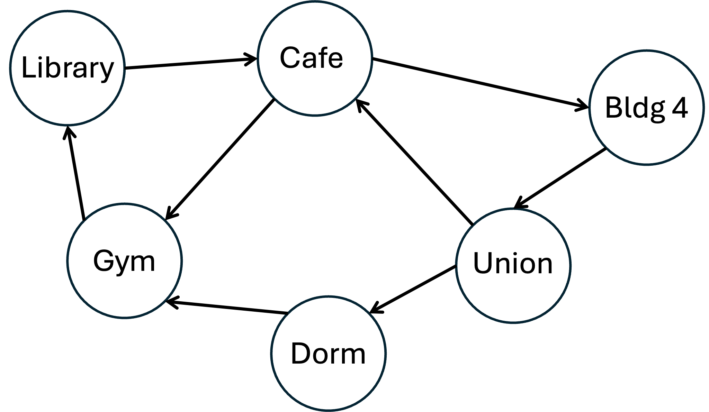
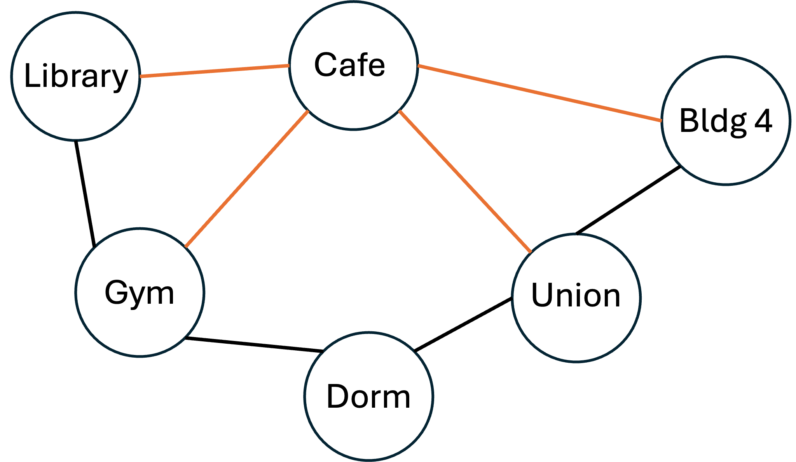
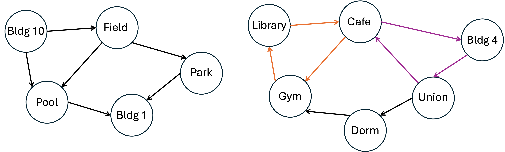
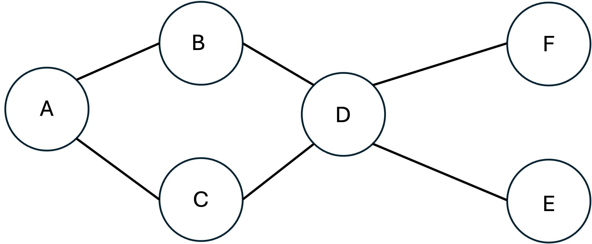
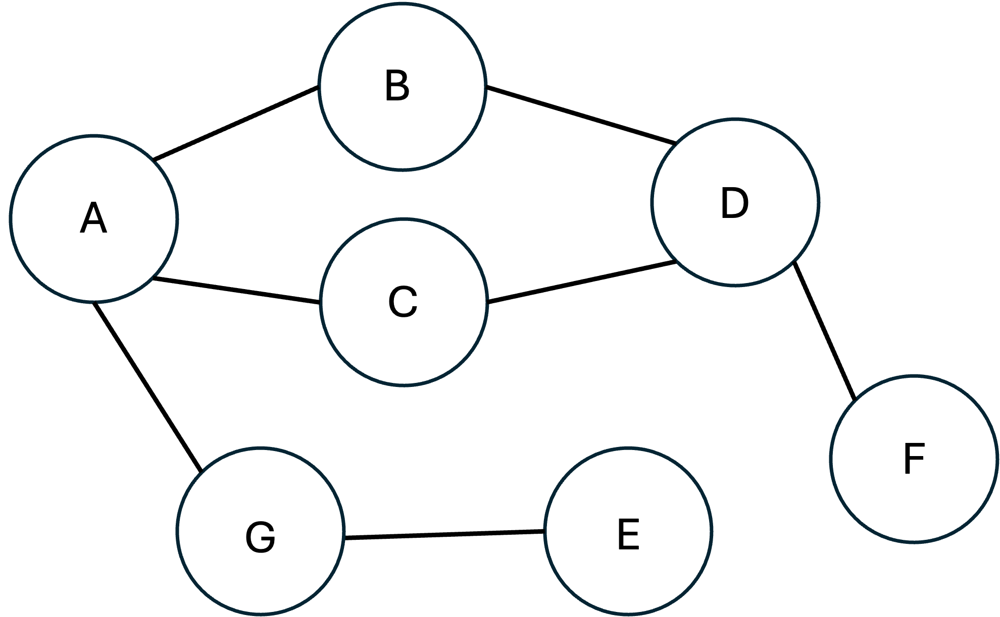
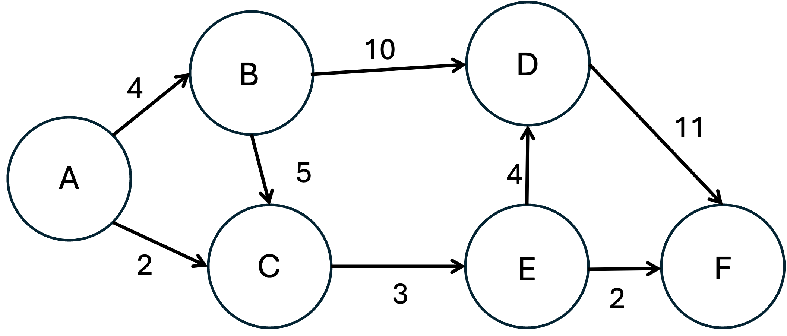
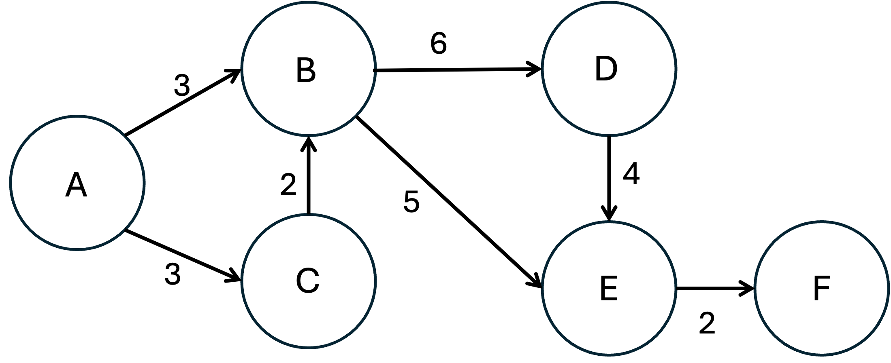

Graphs
Liting Zhang
University of West Florida
Outline
Graph basics and terminology
Graph properties and types
Graph representation with lists and matrices
Breadth-first search (BFS) with a queue
Depth-first search (DFS) with a stack
Dijkstra’s algorithm for weighted shortest paths
Learning goals
Identify vertices, edges, and graph properties.
Represent a graph with an adjacency list and a matrix.
Trace graph traversals.
Use a queue for BFS.
Use a stack for DFS.
Find minimum-cost paths with Dijkstra’s algorithm.
Trace the priority queue.
Reconstruct a path from its predecessors.
Choose between BFS and Dijkstra for shortest paths.
What is a graph?
A graph G = (V, E) consists of two sets.
Vertices (V) represent entities.
The Library and Cafe are vertices.
Edges (E) represent relationships between vertices.
The walkway between the Library and Cafe is an edge.
Graphs can model friendships or computer links.
Vertices, edges, and paths
Adjacent vertices share an edge.
The Library and Cafe are adjacent.
A path follows edges in sequence.
In an unweighted graph, path length counts edges.
Library → Cafe → Union has length 2.
A cycle returns to its starting vertex.
Only the starting vertex repeats.
No edge repeats.
Library → Cafe → Gym → Library is a cycle.
Directed and undirected edges
An undirected edge can be followed in either direction.
On the first map, Library–Cafe goes both ways.
Follow a directed edge in the arrow’s direction.
On this map, Library → Cafe is one-way.
To return, follow Cafe → Gym → Library.
Web links and course prerequisites are directed edges.

Degree of a vertex
In an undirected graph, degree counts the edges at a vertex.
Four orange edges meet at the Cafe.
The Cafe has degree 4.
In a directed graph, count incoming and outgoing edges separately.
In-degree counts arriving edges.
Out-degree counts departing edges.
Total degree is in-degree plus out-degree.
Maximum degree is the largest vertex degree.

Weighted graphs
A weight is a value on an edge.
A weight can represent distance, travel time, or cost.
A path’s total cost is the sum of its edge weights.
Union → Cafe → Gym costs 7 + 5 = 12.
Union → Dorm → Gym costs 2 + 2 = 4.
Both routes use two edges.
Direction and weight are independent.
This graph is both directed and weighted.
Cyclic and acyclic graphs
A cyclic graph contains at least one cycle.
Orange arrows trace Library → Cafe → Gym → Library.
Purple arrows trace Cafe → Bldg 4 → Union → Cafe.
An acyclic graph contains no cycles.
On the left, following arrows leads to Bldg 1.

Connectivity and edge density
Connected (undirected)
Every pair of vertices has a path.
Strongly connected (directed)
Every vertex can reach every other.
Follow the arrows.
Weakly connected (directed)
Every pair has a path with arrows ignored.
Strong connectivity implies weak connectivity.
Edge density
Fraction of possible edges present.
Sparse graphs have few edges.
Dense graphs have nearly all possible edges.
Practice reading graph properties
Is the graph directed? Yes.
Is the graph weighted? No.
What is D’s in-degree? 2.
What is D’s out-degree? 2.
What is the maximum total degree? 4, at D.
Is the graph strongly connected? No. E and F have no outgoing edges.
Is the graph weakly connected? Yes. A can reach every vertex.
Does the graph contain a cycle? No.
Storing a graph in memory
An adjacency list stores each vertex’s neighbors.
An adjacency matrix uses a grid indexed by vertices.
Both examples use the same undirected graph.
Edges are A–B, A–C, B–C, and C–D.
Find A’s neighbors, B and C, in both representations.
Adjacency list
Store each undirected edge in both endpoint lists.
C lists D, and D lists C.
Space is O(V + E).
Scanning the list for u takes O(degree(u)).
An edge check may scan the entire unsorted list.
A: [B, C]
B: [A, C]
C: [A, B, D]
D: [C]Adjacency matrix
Read row u, column v.
1 means there is an edge.
0 means there is no edge.
An undirected edge appears in two cells.
The matrix is symmetric.
| A | B | C | D | |
|---|---|---|---|---|
| A | 0 | 1 | 1 | 0 |
| B | 1 | 0 | 1 | 0 |
| C | 1 | 1 | 0 | 1 |
| D | 0 | 0 | 1 | 0 |
Space is O(V²).
An edge check takes O(1).
A weighted matrix stores edge weights.
Use a separate marker for missing edges if 0 is a valid weight.
Comparing adjacency lists and matrices
| Property | Adjacency list | Adjacency matrix |
|---|---|---|
| Space | O(V + E) | O(V²) |
| Check an edge (u, v) | O(degree(u)) | O(1) |
| List the neighbors of u | O(degree(u)) | O(V) |
| Insert an edge | Amortized O(1) | O(1) |
| Good fit | Sparse graphs | Dense graphs or frequent edge checks |
Assumptions for insertion
Both endpoints already exist.
Insertion skips duplicate checks.
Practice counting edges
How many edges does this undirected graph have?
| A | B | C | D | |
|---|---|---|---|---|
| A | 0 | 1 | 1 | 0 |
| B | 1 | 0 | 1 | 0 |
| C | 1 | 1 | 0 | 1 |
| D | 0 | 0 | 1 | 0 |
4 edges.
The eight 1s form four mirrored pairs.
Count the 1s above the diagonal.
Neighbors in an adjacency list
g.adj[u]stores the neighbors of vertexu.Use IDs A = 0, B = 1, C = 2, and D = 3.
A’s neighbors are B and C.
g.adj[0]contains[1, 2].
BFS and DFS loop over A’s list.
for (int v : g.adj[0])
In a directed graph, the list gives outgoing neighbors.
A weighted list stores
(neighbor ID, weight)pairs.A → B has weight 4.
A → C has weight 2.
A’s complete weighted list is
[(1, 4), (2, 2)].
Neighbors in an adjacency matrix
Scan all columns of the source vertex’s row.
For A, scan row 0.
In the unweighted matrix,
matrix[0][v] == 1identifies a neighbor.
| Row for A | A (0) | B (1) | C (2) | D (3) |
|---|---|---|---|---|
| Unweighted | 0 | 1 | 1 | 0 |
| Weighted | — | 4 | 2 | — |
Columns 1 and 2 give the neighbors B and C.
The weighted row gives their edge weights.
A dash marks a missing edge in the weighted row.
Why traverse a graph?
Visit every vertex reachable from the start.
Can A reach B?
How many edges are in the shortest unweighted route?
Track visited vertices.
Process each vertex once.
Cycles can lead back to a vertex you already visited.
Several routes can reach the same vertex.
Restart at an unvisited vertex to continue the traversal.
Breadth-first search
BFS explores in layers.
Start at distance 0.
Visit vertices one edge away next.
Continue to distance 2 and beyond.
A FIFO queue processes earlier discoveries first.
The first discovery gives the minimum edge count.
Record the predecessor to recover a shortest path.
BFS steps
Enqueue the start vertex.
Mark it discovered as it enters the queue.
Dequeue the front vertex.
Process that vertex.
Enqueue each undiscovered neighbor.
Mark each one as it enters the queue.
Repeat until the queue is empty.
Marking on enqueue prevents duplicates.
BFS from A
Start at A.
Enqueue unseen neighbors in A–Z order.

The front of the queue is on the left.
| Action | Queue | Discovery order |
|---|---|---|
| Enqueue A | [A] | A |
| Dequeue A. Enqueue B, C. | [B, C] | A, B, C |
| Dequeue B. Enqueue D. | [C, D] | A, B, C, D |
| Dequeue C. D is already discovered. | [D] | A, B, C, D |
| Dequeue D. Enqueue E, F. | [E, F] | A, B, C, D, E, F |
| Dequeue E. No new neighbors. | [F] | A, B, C, D, E, F |
| Dequeue F. No new neighbors. | [] | A, B, C, D, E, F |
Practice tracing BFS
Start at A.
Push unseen neighbors in A–Z order.
Keep the queue front on the left.
Track the queue and seen set after each step.

Discovery order A, B, C, G, D, E, F
| Step | Removed from front |
Push unseen neighbors to the back of the queue |
Queue after this step |
Seen so far |
|---|---|---|---|---|
| Start | — | A | [A] | {A} |
| 1 | A | B, C, G | [B, C, G] | {A, B, C, G} |
| 2 | B | D | [C, G, D] | {A, B, C, D, G} |
| 3 | C | — | [G, D] | {A, B, C, D, G} |
| 4 | G | E | [D, E] | {A, B, C, D, E, G} |
| 5 | D | F | [E, F] | {A, B, C, D, E, F, G} |
| 6 | E | — | [F] | {A, B, C, D, E, F, G} |
| 7 | F | — | [] | {A, B, C, D, E, F, G} |
BFS implementation
Mark each neighbor when it enters the queue.
void bfs(const Graph& g, int start) {
queue<int> q;
vector<bool> seen(g.size(), false);
seen[start] = true;
q.push(start);
while (!q.empty()) {
int u = q.front();
q.pop(); // Process u here.
for (int v : g.adj[u]) {
if (seen[v]) continue;
seen[v] = true;
q.push(v);
}
}
}Depth-first search
DFS follows a branch as far as possible.
Backtrack when there is no unvisited neighbor.
A LIFO stack takes the most recent entry first.
If you push B then C, C comes off first.
Recursive DFS backtracks by returning to the previous call.
Iterative DFS steps
Push the start vertex.
Pop the top entry.
Skip the entry if its vertex was already visited.
Mark the vertex visited.
Process that vertex.
Push each unvisited neighbor.
Repeat until the stack is empty.
A vertex can be pending more than once.
Iterative DFS from A
Start at A.
Push unvisited neighbors alphabetically.
The last neighbor pushed is on top.
The top of the stack is on the right.
| Action | Stack | Visit order |
|---|---|---|
| Push A | [A] | — |
| Pop A. Push B, C. | [B, C] | A |
| Pop C. Push D. | [B, D] | A, C |
| Pop D. Push B, E, F. | [B, B, E, F] | A, C, D |
| Pop F. No new neighbors. | [B, B, E] | A, C, D, F |
| Pop E. No new neighbors. | [B, B] | A, C, D, F, E |
| Pop B. No new neighbors. | [B] | A, C, D, F, E, B |
| Pop B again. Skip it. | [] | A, C, D, F, E, B |
Practice tracing iterative DFS
Start at A.
Push unvisited neighbors in A–Z order.
Mark visited on pop.
Keep the stack top on the right.
Track the stack and visited set after each step.
Visit order A, G, E, C, D, F, B
| Step | Popped from top |
Visit / Skip | Pushed onto the stack |
Stack after this step |
Visited so far |
|---|---|---|---|---|---|
| Start | — | — | A | [A] | {} |
| 1 | A | Visit | B, C, G | [B, C, G] | {A} |
| 2 | G | Visit | E | [B, C, E] | {A, G} |
| 3 | E | Visit | — | [B, C] | {A, E, G} |
| 4 | C | Visit | D | [B, D] | {A, C, E, G} |
| 5 | D | Visit | B, F | [B, B, F] | {A, C, D, E, G} |
| 6 | F | Visit | — | [B, B] | {A, C, D, E, F, G} |
| 7 | B | Visit | — | [B] | {A, B, C, D, E, F, G} |
| 8 | B | Skip | — | [] | {A, B, C, D, E, F, G} |
Iterative DFS implementation
Check for repeat visits when popping an entry.
void dfs(const Graph& g, int start) {
stack<int> pending;
vector<bool> visited(g.size(), false);
pending.push(start);
while (!pending.empty()) {
int u = pending.top();
pending.pop();
if (visited[u]) continue;
visited[u] = true;
// Process u.
for (int v : g.adj[u]) {
if (!visited[v]) pending.push(v);
}
}
}Recursive DFS implementation
Each call explores one unvisited neighbor at a time.
void dfsHelper(const Graph& g, int u,
vector<bool>& visited) {
visited[u] = true;
// Process u.
for (int v : g.adj[u]) {
if (!visited[v]) dfsHelper(g, v, visited);
}
}
void dfs(const Graph& g, int start) {
vector<bool> visited(g.size(), false);
dfsHelper(g, start, visited);
}Returning from a call backtracks.
With alphabetical neighbors, recursion visits B before C.
The stack example visits C before B.
Comparing BFS and DFS
| Property | BFS | DFS |
|---|---|---|
| Exploration order | Layer by layer | Follow a branch, then backtrack |
| Data structure | FIFO queue | LIFO stack or recursion |
| Shortest path | Fewest edges | May find a longer route first |
| Common uses | Degrees of separation | Mazes, cycle detection, topological sorting |
Time for either traversal
O(V + E) with adjacency lists.
O(V²) in the worst case with an adjacency matrix.
Fewest edges and lowest cost
Compare two routes from A to D.
A → B → D uses 2 edges.
Total cost is 4 + 10 = 14.
A → C → E → D uses 3 edges.
Total cost is 2 + 3 + 4 = 9.
BFS minimizes the number of edges.
Dijkstra’s algorithm minimizes total cost.
Start from one source.
Use non-negative edge weights.

Tentative distances and relaxation
A tentative distance is the best cost found so far.
Relax u → v to test a route to v through u.
Compute distance to u plus the edge weight.
Use the smaller distance if the route improves.
Record u as v’s predecessor when the distance improves.
A min-priority queue selects the smallest tentative distance.
Popping the smallest current entry finalizes its distance.
A competing route must first reach an unfinished vertex.
We already checked exits from finalized vertices.
Non-negative edges cannot lower a route’s cost.
Dijkstra’s algorithm steps
Initialize the distances.
Set the source to 0.
Set all other distances to ∞.
Push (0, source).
Pop the smallest entry (d, u).
Skip a stale entry if d differs from the current distance to u.
Finalize u.
Relax each outgoing edge.
Save each better distance.
Update its predecessor.
Push the new entry.
Repeat until the queue is empty.
Unreachable vertices keep distance ∞.
Dijkstra trace setup
Start at A with distance 0.
Set every other distance to ∞.
No vertex has a predecessor yet.
✓ marks a finalized distance.
Bold marks a distance update.
Priority queue in pop order
[(0,A)]
| Vertex | A | B | C | D | E | F |
|---|---|---|---|---|---|---|
| Distance | 0 | ∞ | ∞ | ∞ | ∞ | ∞ |
| Predecessor | — | — | — | — | — | — |
Dijkstra trace expands A
Pop (0,A) to finalize A.
Relax A’s outgoing edges.
A → B gives 0 + 4 = 4.
A → C gives 0 + 2 = 2.
Priority queue in pop order
[(2,C), (4,B)]
| Vertex | A | B | C | D | E | F |
|---|---|---|---|---|---|---|
| Distance | 0 ✓ | 4 | 2 | ∞ | ∞ | ∞ |
| Predecessor | — | A | A | — | — | — |
Dijkstra trace expands C
Pop (2,C) to finalize C.
C → E gives 2 + 3 = 5.
Priority queue in pop order
[(4,B), (5,E)]
| Vertex | A | B | C | D | E | F |
|---|---|---|---|---|---|---|
| Distance | 0 ✓ | 4 | 2 ✓ | ∞ | 5 | ∞ |
| Predecessor | — | A | A | — | C | — |
Dijkstra trace expands B
Pop (4,B) to finalize B.
Test B → C.
4 + 5 = 9 exceeds C’s distance of 2.
B → D gives 4 + 10 = 14.
Priority queue in pop order
[(5,E), (14,D)]
| Vertex | A | B | C | D | E | F |
|---|---|---|---|---|---|---|
| Distance | 0 ✓ | 4 ✓ | 2 ✓ | 14 | 5 | ∞ |
| Predecessor | — | A | A | B | C | — |
Dijkstra trace improves D through E
Pop (5,E) to finalize E.
Relax E → D.
5 + 4 = 9 improves on 14.
E → F gives 5 + 2 = 7.
Priority queue in pop order
[(7,F), (9,D), (14,D stale)]
| Vertex | A | B | C | D | E | F |
|---|---|---|---|---|---|---|
| Distance | 0 ✓ | 4 ✓ | 2 ✓ | 14 → 9 | 5 ✓ | 7 |
| Predecessor | — | A | A | E | C | E |
Dijkstra trace finishes with F and D
Pop (7,F) to finalize F.
F has no outgoing edges.
Pop (9,D) to finalize D.
D → F gives 9 + 11 = 20, so F stays at 7.
Skip stale (14,D) because D’s distance is 9.
Priority queue in pop order
[]
| Vertex | A | B | C | D | E | F |
|---|---|---|---|---|---|---|
| Distance | 0 ✓ | 4 ✓ | 2 ✓ | 9 ✓ | 5 ✓ | 7 ✓ |
| Predecessor | — | A | A | E | C | E |
Reconstructing the shortest paths
Follow predecessors from the destination back to A.
For D, the predecessor chain is D, E, C, A.
Reverse the vertex order to read the path from A.
| Destination | Distance from A | Path |
|---|---|---|
| A | 0 | A |
| B | 4 | A → B |
| C | 2 | A → C |
| D | 9 | A → C → E → D |
| E | 5 | A → C → E |
| F | 7 | A → C → E → F |
Practice tracing Dijkstra
Start at A.
Log the queue after each full step.
Break ties alphabetically.
Find the final distances.
Find each vertex’s predecessor.

| Step | Queue after updates (next first) |
|---|---|
| Initialize | [(0, A)] |
| Pop (0, A) | [(3, B), (3, C)] |
| Pop (3, B) | [(3, C), (8, E), (9, D)] |
| Pop (3, C) | [(8, E), (9, D)] |
| Pop (8, E) | [(9, D), (10, F)] |
| Pop (9, D) | [(10, F)] |
| Pop (10, F) | [] |
| Vertex | Distance | Predecessor |
|---|---|---|
| A | 0 | — |
| B | 3 | A |
| C | 3 | A |
| D | 9 | B |
| E | 8 | B |
| F | 10 | E |
Dijkstra implementation
The min-heap stores
(distance, vertex)pairs.The function returns distances.
It records predecessors in
prev.
vector<long long> dijkstra(const WeightedGraph& g,
int start, vector<int>& prev) {
vector<long long> dist(g.size(), LLONG_MAX);
prev.assign(g.size(), -1);
using Entry = pair<long long, int>;
priority_queue<Entry, vector<Entry>,
greater<Entry>> pq;
dist[start] = 0;
pq.push({0, start});
while (!pq.empty()) {
long long d = pq.top().first;
int u = pq.top().second;
pq.pop();
if (d != dist[u]) continue; // Stale entry.
for (const auto& edge : g.adj[u]) {
int v = edge.first;
long long candidate = d + edge.second;
if (candidate >= dist[v]) continue;
dist[v] = candidate;
prev[v] = u;
pq.push({candidate, v});
}
}
return dist;
}Dijkstra time complexity
An adjacency list lets us scan each outgoing edge once.
A binary min-heap holds tentative entries.
Relaxations add at most O(E) entries.
On a simple graph, each heap operation costs O(log V).
Adjacency lists plus a min-heap take O((V + E) log V).
Scanning an array for the next vertex takes O(V²) overall.
When Dijkstra applies
Dijkstra requires non-negative weights.
A negative edge can improve an already finalized distance.
Bellman–Ford supports negative edges.
It can detect a reachable negative cycle.
A reachable negative cycle lets a route keep getting cheaper.
Destinations reachable from that cycle have no finite minimum cost.
Choosing a graph algorithm
An adjacency list makes neighbor scans efficient.
An adjacency matrix gives constant-time edge checks.
BFS finds a route with the fewest edges.
A queue explores by layers.
Record a predecessor on first discovery.
DFS explores branches and backtracks.
Use a stack or recursion.
Dijkstra finds minimum cost with non-negative weights.
A min-priority queue selects the smallest tentative distance.
Record a predecessor when a distance improves.